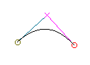

An Outline Font Editor
| Eeyore had three sticks on the ground,
and was looking at them. Two of the sticks were touching at one end, but
not at the other, and the third stick was laid across them. Piglet thought
that perhaps it was a Trap of some kind.
``Oh, Eeyore,'' he began again, ``just ---'' ``Is that little Piglet?'' said Eeyore, still looking hard at his sticks. ``Yes, Eeyore, and I---'' ``Do you know what this is?'' ``No,'' said Piglet. ``It's an A.'' ``Oh,'' said Piglet. ``Not O, A,'' said Eeyore severely.
-- A. A. Milne, 1928 |
Font design can be a Trap, but I find it a rather pleasant one. Caveat utor.
FontForge allows you to create and modify postscript, truetype and opentype fonts. You can save fonts in many different outline formats, and generate bitmaps.
Obviously you may choose to place the executable somewhere other than /usr/local/bin.
(If you have already pulled down the sources and just want to update to a new version then you only need to pull down those archives which have changed)
You may also want to pull down some extra fonts
To install these, put them in a directory
Again you should make sure that the xset line happens whenever X is started on your machine (put it in your .xsession file).
$ fontforge -new
$ fontforge fontname
More than one fontname may be specified on the command line.
$ fontforge "gulim.ttc(GulimChe)"
$ fontforge
On Mac OS/X you must start XDarwin before you can start fontforge. See the
Mac specific notes for more info.
On windows under cygwin you must again start X first
What is a postscript font? What is a bitmap font?
Each character (or to be more precise, each glyph) in a font has a shape and there are various ways of describing that shape on a computer. Postscript and truetype fonts generally describe the outline of the shape and then color in the interior of that outline, this coloring process is called rasterizing. On the other hand a bitmap font describes each glyph by drawing a picture of that character on a rectangular grid of pixels. There is a third type, a stroked font, where each stem of the glyph is represented by one line down the center of the stem, and the line is later drawn with a certain width. Most of the time we will not deal with stroked fonts directly (the Expand Stroke command can be used to turn them into outlines), but if you wish to edit stroked fonts, see the section on multi-layered editing.
|
A glyph's bitmap |
|
An outline is composed of a set of contours or paths. In the picture on the above left the letter A is described by three different paths. The main one is on the outside and the two smaller ones are internal. Each of these paths is composed of a series of splines and line segments. Each cubic spline is defined by four points, two of which mark the end points of the spline and two more to describe the slope of the spline at those end points. Here are two splines with all their points shown:

The points which describe the slope are called control points. They are represented here (and in fontforge) by little colored x's. Moving a control point will change the shape of the spline, but it will not alter where the spline begins or ends.
 A series of splines
and lines are joined together to make a path. There are several possible
ways to make these joins as is shown in the example to the right. In each
case we have three points in approximately the same relative positions. The
three points are joined by splines or lines, but the type of joins alter
the appearance of the connections.
A series of splines
and lines are joined together to make a path. There are several possible
ways to make these joins as is shown in the example to the right. In each
case we have three points in approximately the same relative positions. The
three points are joined by splines or lines, but the type of joins alter
the appearance of the connections.
In the first case there are no control points and the result is two straight lines, in the second case there is a line and a curved spline which are tangent at their point of intersection, in the third case there are two splines which are again tangent at their point of intersection. The point of intersection in the first case is called a corner point, and the incoming and outgoing splines or lines may be in any orientation with respect to each other. This is represented in fontforge by a square box. In the second case the point of intersection is called a tangent point, it is represented by a triangle. The third case is a curved point and is represented by a circle.
FontForge can also edit quadratic splines (these are the splines used in truetype fonts), here there is only one control point, and it controls the slopes at both end-points. Because of this quadratic splines cannot bend in as many ways as cubic splines (the first spline above left would need at least two quadratic splines to draw), and you will often need more splines to achieve the same curve. You can control whether a font contains cubic or quadratic splines with the Element->Font Info command.
A path is closed when it comes back and joins its start. All paths in an outline font should be closed. Once a path is closed in may be said to have a direction, essentially this may be thought of as "Was the path created in a clockwise or a counter-clockwise fashion?" (this is actually a little simplistic, if a path intersects itself, as in a figure 8, then the direction cannot be described as either clockwise or counter-clockwise, but most paths do not self-intersect (and paths in a font SHOULD not self-intersect) and we will simplify our life by pretending that we can call paths clockwise or counter).
When time comes to draw our outline glyph we want to make dark everything in the interior of the outline. But let's look at the outline of our A above. We have two paths inside the main outline path, and we want the interior of those two paths to be white rather than dark. How do we make this distinction? We do it by the direction of the paths. Consider any point in the glyph. If we draw an imaginary line from that point out to infinity (in any direction) and count the number of times we cross a path, each time we cross a clockwise path we add one to our count, each time we cross a counter clockwise path we subtract one. If the result of our count is non-zero then we color the point dark, otherwise we leave it white. So to make the A above work we make the outer path be clockwise and the two inner ones be counter-clockwise (Things could be done the other way around, but the convention is that the outer path should be clockwise).
All of these points (both the end points and the control points) are described mathematically. Each point is positioned on a cartesian coordinate system which has its origin on the glyph's base line (the line on which letters without descenders rest). Most font formats expect coordinates to be integers between -32768 and 32767, FontForge uses real numbers internally but (usually) rounds to the nearest integer when generating a font file.
The horizontal distance between the origin and the leftmost edge of the glyph is called the left side bearing (it may be negative, positive or zero). All glyphs have a width (sometimes called an advance width), this is the distance from the current glyph's origin to the origin of the next glyph. The distance between the right edge of the glyph and the width is called the right side bearing.
CJK text (Chinese, Japanese or Korean) can be written either vertically or horizontally, and so CJK fonts usually have a vertical advance width as well as the more common horizontal advance.
A glyph like "g" or "y" extends below the baseline, this is called a descender, while a glyph like "k" or "l" extends above it, this is called an ascender. Most latin (and greek and cyrillic) fonts have certain standard heights: the height of a lower case letter (without an ascender) is called the x-height, the height of a capital letter is called the cap-height, the height of the ascenders is called the ascender height (some, but not all, fonts have the ascenders and capitals at the same approximate height). Usually these will not be exactly the same for all glyphs, the letter "O" is usually slightly taller than the letter "I", but they both are within the range of the cap height for the font.
The font itself has an ascent and descent associated with it. In the old days of metal type nothing could ascend above or descend below these values, nowadays accents and ascenders may reach above the font-wide ascent and descenders below it, but the concept is still a convenient one to retain. It is true that in almost all cases the glyphs will not ascend above or descend below the font-wide ascent and descent. The sum of the ascent and descent is the size of the font. The point size of a piece of metal type was determined by this value (essentially the height of the metal block holding the glyph). In a postscript font the local coordinate system is independent of the final size at which the font will be draw. By convention in postscript the sum of the ascent and descent is 1000 units, while in TrueType it is usually a power of two, often 2048.
FontForge can produce both TrueType and PostScript fonts. What's the difference?
PostScript is based on a cubic spline technology described above, while TrueType is based on a quadratic technology. Cubic splines are generally easier to edit (more shapes are possible with them). Any quadratic spline can be converted to a cubic spline with essentially no loss. A cubic spline can be converted to a quadratic with arbitrary precision, but there will be a slight loss of accuracy in most cases. This means it is easy to convert TrueType outlines to PostScript outlines, harder to convert PostScript to TrueType.
Within FontForge a font may contain either cubic or quadratic splines. These are converted to the appropriate format when a font is generated.
The other major difference between the two is how they solve the problem of drawing nice images at small pointsizes. PostScript calls this "Hinting", while TrueType calls it "Instructing" a font.
Open Type is just a postscript font put into a truetype format -- From the outside it looks like a truetype font except that the outline descriptions are postscript Type2 font descriptions rather than TrueType. (Actually any truetype font can be called an OpenType font. OpenType is a superset of TrueType)
SVG (Scalable Vector Graphics) provides a relatively new font format, written in an xml dialect. SVG fonts can be either cubic or quadratic (or can use both, but FontForge is limited and will force a font to be either all cubic or all quadratic). SVG allows for two different types of fonts, one corresponds roughly to PostScript Type1 fonts, and the other, roughly to PostScript Type3 fonts (except that images are not allowed in svg fonts -- or I haven't figured them out if they are).
Back in the early days of PostScript, the Type1 format was proprietary, only Adobe could make Type1 fonts, but anyone could make Type3 fonts. Type3 fonts were unhinted, but could include any postscript command and so could produce a wider range of pictures (multi-colored glyphs, stroked glyphs, glyphs based on scaled images, etc.). Most of the time these extensions are unnecessary, and the disadvantage of being unhinted is onerous. If you compile FontForge with multilayer set you will be able to create type3 fonts.
These are the standard PostScript fonts.
These use a slightly different internal format to express the same information as type1.
At small pixel sizes, the process of drawing the interior of an outline font is quite difficult to do well. Postscript and TrueType have different approaches to the problem of providing extra information to the rasterizer about how to draw small fonts.
|
|
Adobe also has a mechanism for handling dished serifs called flex hinting. This means a curve that is only slightly deformed from the horizontal (or vertical) will display as a line at small point sizes and as a curve at larger ones. FontForge will use these when it seems appropriate.
The original version of hints did not allow them to overlap, this meant that most serifs could not be described, Adobe then developed a mechanism called hint substitution which allows for different sets of non-overlapping hints to exist in different parts of the glyph. There are still shapes which cannot be fully hinted, but hint substitution is an improvement. The Hints->AutoHint command will figure out what stems overlap and where to change the current set of hints. The Hints->Hint Substitution Pts command will also figure where hint changes should occur, and the Hint Mask pane of the Point Info dialog gives the user direct control over this.
Most recently Adobe has provide a means to control the counters, the spaces between stems, in a glyph. The original Type1 description provided support for the horizontal counters in "m" and the vertical counters in "E" but more complex shapes could not be dealt with. Counter Hints (in a type1 font) may only be used with non-latin (non-greek, non-cyrillic) glyph sets, in type2 (OpenType) things are a bit more complicated,. FontForge will generate counter hints when appropriate.
Adobe provides some font-wide hinting mechanisms. The two most obvious are
the BlueValues and StemSnap settings in the
private dictionary. BlueValues provides
a list of vertical zones in which interesting things happen (so in a latin
font this might include the ascender height, the cap-height, the x-height
and the descender height. At small point sizes everything within one of these
zones will snap to the same height, while at larger point sizes the heights
will be slightly different (for instance an "o" and an "x" usually have slightly
different heights, but displaying that at a small point size would be ugly).
Similarly the StemSnap variables specify standard stem widths for the font.
FontForge will try to guess reasonable values for these. It also allows you
to override these guesses and specify your
own values. For a more comprehensible description of the private dictionary
and what it can do, look at
Adobe's
Type1 font specification.
FontForge's
AutoHint command will work better if
the BlueValues have been set. So before running AutoHint go to
Element-> FontInfo-> Private to
set this array. After AutoHinting you should regenerate the StemSnaps (also
at Element-> FontInfo-> Private).
 Grid Fit M |
On the other hand, True Type says that figuring out what pixels to turn on would be a lot simpler if only the points and the splines were in the right place (ie. at pixel boundaries). And so True Type provides a set of instructions that move points around until they are positioned appropriately for a given size.
FontForge's hinting of True Type (properly called "instructing") is very primitive, and is based on the stem hints also used by PostScript. It uses these hints to determine which points to move and where to move them. It also supports the concept of diagonal stems and hints them so they will have approximately the same width. It does a little extra work, trying to detect serifs that are attached to vertical stems and providing hints for them as well. It also uses the equivalent of the PostScript BlueValues to generate cvt entries that force glyphs to have the same height at small pointsizes.
I am not happy with the instructions I generate for TrueType.
When FontForge reads in a TrueType font it will store the instructions used, and when it next generates that font it will use those instructions -- provided no significant change has happened to a glyph.
Most of my hinting user interface is designed with PostScript fonts in mind.
In addition to a set of outlines (splines) glyphs may be built out of references to other glyphs. This is especially handy for the accented glyphs, "à" can be made up of a reference to the "a" glyph and another reference to the "`" glyph. This can result in significant space savings, and in ease of design (if you change the "a" glyph after making a reference to it the "à" glyph will automatically change to, whereas if you just copied the "a" you would have to recopy it.
FontForge has three commands for manipulating references, and one higher
level command for building accented glyphs. The Edit->Copy Reference command
will put a reference to the current glyph into the clipboard, which a subsequent
Edit->Paste command will install as a reference. The Edit->Unlink Reference
command will turn a reference in a glyph into it's component splines. The
Element->Get Info command (when applied to a reference) will bring up
a dialog showing you what glyph is referred to, and allowing you to bring
up an editing window on that glyph. Finally the Element->Build Accented
Glyphs command will figure out what glyphs should be refered to to
build this composite glyph, and then will make those references and position
them appropriately. So if "à" were selected and you did a
Element->Build Accented Glyphs command, the FontForge would
make a reference to "a" and another to "`", and place the accent above the
letter, and centered on it.
Sadly life is not quite that simple. Both PostScript and TrueType place restrictions on what kinds of glyphs may be referenced, worse they make different restrictions. About the only restriction FontForge makes is that it won't let you put a reference to a glyph inside itself. When generating a font, if it finds a situation where it can't use a refered glyph as a reference it will fix it up somehow, usually this means replacing it with the equivalent outlines.
In both TrueType and PostScript a glyph may not contain both splines and references, it must be wholy one or the other. If you mix splines and references FontForge will convert all references to splines during font generation.
In PostScript characters refered to must be in the Adobe Standard Encoding, which includes all of the Ascii characters, a collection of accents and certain ligatures. One of the referenced glyphs may be translated, but neither may be rotated, skewed or scaled. There must be exactly two referenced glyphs, and the reference glyph which is not translated must have the same width as the one being built.
Technical and confusing: FontForge has some tricks it can use to improve things. If you are working on U+04D2 (Cyrillic capital letter A with diaeresis) and you make it out of U+0410 (Cyrillic capital letter A) and U+00A8 (diaeresis) and U+0410 is itself a reference to U+0041 (Latin capital letter A), then FontForge will generate a postscript font where U+04D2 is a composite of U+0041 and U+00A8, both of which are in the Adobe Set (while U+0410 is not). Again when generating U+0410 FontForge will make it be a composite of U+0041 and U+0020 (space) so as to get exactly two glyphs.Technical and confusing: If that fails FontForge will attempt to put the referenced glyphs into subroutines and then invoke those. This only works if the glyphs in question either:
- Have no overlapping hints (don't need hint substitution) and don't require flex hints
- Or (if there are overlapping hints or flex hints) if the glyph in question is not translated and has the same left side bearing as the glyph refering to it (which is often the case)
In TrueType may be skewed and rotated as well as translated, and may be scaled as long as it is by an amount less than 2.
Technical and confusing: So in the example above a generated TrueType font would also have U+04D2 composed of U+0041 and U+00A8.
In OpenType (actually Postscript type2 fonts) things are different again. There is no direct support for references. FontForge will produce something which will allow for the space saving that references provide (by using subroutines), but it will not be able to detect what's a reference and what isn't when it reads the font in. Any glyph which does not itself contain a reference may be in a reference, but only translations are allowed on those references, and as above either the glyphs must not have any overlapping hints (flex hints are ok here) or must not be translated and none of the other references may have any hints at all.
A script is a collection of letter shapes and rules for putting letters together. For instance latin is a script consisting for the letters A-Z, written left to right, along with a transformation from upper to lower case in most instances, a few ligatures and rules for generating accents. Arabic is a script consisting of its own character set, written right to left, along with transformations for initial, medial, final and isolated forms, many ligatures and rules for placing vowel marks.
Anchor points allow fine control of the positioning of two (or several) glyphs. There are several different styles of attachment based on anchors: cursive, mark to base, mark to ligature and mark to mark positioning. The first style is used to join glyphs in flowing scripts (cursive) where the exit from one glyph joins the entry point of the next. In the second style one of the glyphs is the base glyph, and it will be positioned normally, the other glyph will often be a diacritic or vowel mark and it will be positioned so that the anchor points in each glyph are coincident. Mark to ligature behaves similarly to mark to base except that there may be more that one attachment point for the mark depending on which component of the ligature it is connected to. Finally, mark to mark allows you to position two marks with respect to each other (as you might need to do in vietnamese or hebrew where you may get several marks for one glyph).
That is badly said. Consider the following two glyphs and how they are joined to make the final result:
 |
+ |  |
=> |  |
The grave accent has been raised and moved to the right so that its anchor point is positioned where the anchor from "a" was.
FontForge does not compose these glyphs (well, it can, but that's a completely different area), instead it provides information with the font to a text layout program so that it can do the composition.
The example above is unlikely to be very useful since most latin fonts contain pre-composed a-grave glyphs, but the same concepts apply to arabic and hebrew where the number of variants is larger and the precomposed glyphs fewer.
That's roughly how anchor points are used. Now the mechanics.
A font may contain a list of Anchor Classes which may be specified with the Element->Font Info dialog. An anchor class consists of a name (in the above example the class was called "Top"), a tag, a set of scripts and languages to which it applies, and the type of anchor. The tag is meaningful in the context of the GPOS table and unless you are working with indic languages should probably be left as 'mark' for mark to base or mark to ligature connections. For cursive connections, use the tag 'curs', and for mark to mark connections use 'mkmk'.
Cursive attachments are a little different from the other attachment types. Each glyph has two attachment points, an entry and an exit (instead of just the one shown in the mark to base example above). The text layout program will attach the exit point of one glyph to the entry point of the next.
A glyph may contain several Anchor Points, but only one for each anchor class (ligatures may have more than one for a class, and 'curs' classes should have two). You may create a point with the Point->Add Anchor command. You must specify an anchor class, and whether this point is in a base glyph or in a mark glyph, and a location. So in the example above the anchor point in "a" has class "Top" and is a base glyph, while the anchor point in "grave" also has class "Top" but is a mark glyph. There may be many base glyphs with an anchor point named "Top" and many mark glyphs also with "Top" anchor points. Any base glyph with a "Top" anchor point maybe composed with any mark glyph with a "Top" anchor point. So instead of specifying the exact composed form for all possible combinations we specify far fewer anchor points for the same effect.
But life is not really that simple. Ligatures may need several anchor points of the same class (one above each component for example). When you create your anchor point you may say that it is to be in a ligature, in which case you will also be asked for a ligature index -- a number running from 0 to the number of components -1. This allows you to position several anchor points with the same class. The text layout program will place the first mark over the first anchor point, the second mark over the second and so on (this is a gross simplification).
Finally you may need to position two marks based on the same anchor point,
for example the glyph  has a diaeresis and a macron over it. Both of which might normally be positioned
with the Top anchor class. Instead we define a special class for positioning
one mark with respect to another. When creating the anchor class specify
a tag of 'mkmk' (mark to mark) and call it something like "TopMark". When
you create a new anchor point for diaeresis you specify that it is a base
mark and you position it above the glyph, while the new anchor point
in macron should be of type mark and should be positioned at the same place
as the "Top" anchor point. Thus when given the sequence of glyphs "a diaeresis
macron" the text layout program should position "a" normally, position
"diaeresis" so that the its Top anchor point is where "a"'s is, and position
macron so that its TopMark anchor point is where "diaeresis"'s is.
has a diaeresis and a macron over it. Both of which might normally be positioned
with the Top anchor class. Instead we define a special class for positioning
one mark with respect to another. When creating the anchor class specify
a tag of 'mkmk' (mark to mark) and call it something like "TopMark". When
you create a new anchor point for diaeresis you specify that it is a base
mark and you position it above the glyph, while the new anchor point
in macron should be of type mark and should be positioned at the same place
as the "Top" anchor point. Thus when given the sequence of glyphs "a diaeresis
macron" the text layout program should position "a" normally, position
"diaeresis" so that the its Top anchor point is where "a"'s is, and position
macron so that its TopMark anchor point is where "diaeresis"'s is.
Anchor points may be selected, dragged, transformed, cut, copied and pasted.
The font view displays all the glyphs in the font (or all that will fit in the window). Every line has two parts, at the top is a label, often small clear letters, underneath that, somewhat larger is a 24 pixel rasterization of the font you have designed. As you edit a glyph in an outline glyph view its small version in the font view will change as you edit.
Double-clicking on a glyph will bring up an outline glyph view of that glyph which will allow you to edit it.
Selecting several glyphs will allow you to apply various operations to all of them, or to cut and paste them.

Fonts do not need to be for the latin alphabet alone. Below is a view of one of Wadalab's public domain Kanji fonts...

Another Wadalab font encapsulated in a CID keyed font

The outline view is probably the most complex view in FontForge. This is where you actually edit the splines (Bézier splines) that make up your glyphs.
You may have a background image loaded into the view to help you trace out the shape you are working on (it is displayed in grey). There are various grid lines visible, some created by default (the baseline, the ascent line, the descent line, and a line at x=0), you may add others yourself.
There is a layer showing the glyph's hints.
In the foreground are the splines and points of the glyph itself, and the width line (you may adjust the glyph's width by moving this line). If a point is selected then its control points will be displayed.
To the left of the main window (the image below shows them on the right, that was just to keep them from crowding things, you can move them around) are two palettes, one a palette of tools, and the other a palette controlling what layers (foreground, background, grid, hints) are visible and editable.

The bitmap view is similar to the outline view above. It also has a tools and layer palette.
This allows you to edit bitmap versions of the outline glyphs you create above.
In the background is a small rendition of the outline, and in the foreground are the bits of the image. You may make the program calculate which bits should be set by pressing the "Recalculate button", the results usually need to be tweaked by hand. In the upper left corner is a full sized image of your bitmap glyph.

The metrics view allows you to see how the glyphs look together.
You can change the width and left/right bearings of a glyph, either by dragging in the upper part of the window or by entering an appropriate number in the lower.
You can also provide kerning information for any two adjacent glyphs.

 Note
that in Hebrew, or Arabic (or any other right to left alphabet) the glyphs
will start on the right and run to the left. While in CJK fonts you may want
to see things arranged vertically.
Note
that in Hebrew, or Arabic (or any other right to left alphabet) the glyphs
will start on the right and run to the left. While in CJK fonts you may want
to see things arranged vertically.

-- Next --